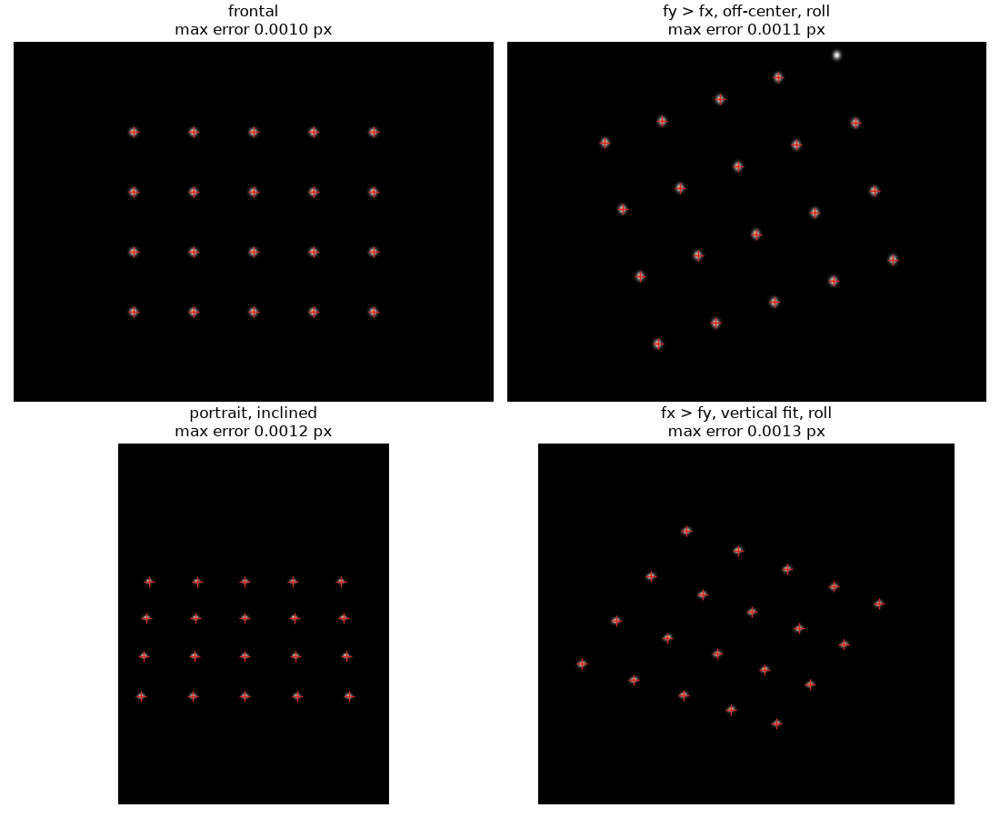

Note
Go to the end to download the full example code.
Checking the Blender cameras against pysdic#
pysdic_blender.BlenderCamera converts an OpenCV camera of pysdic into a Blender camera
(pose, focal lengths, principal point, pixel aspect ratio, sensor fit). This example checks that
Blender projects exactly as pysdic: a plate textured with small Gaussian spots is rendered, and
the centroid of each spot in the render is compared to the centroid predicted by pysdic.
The same check runs in the tests of the package (tests/test_blender_projection.py).
Important
Requires pysdic-blender (pip install pysdic-blender), which installs bpy.
Cameras#
Four cameras cover all the conversions: \(f_x \neq f_y\) in both directions (pixel aspect ratio), an off-center principal point, a portrait image (vertical sensor fit), an inclination and a roll.
import numpy
from scipy.spatial.transform import Rotation
from pysdic import Camera, PerspectiveExtrinsic, PinholeIntrinsic, create_3d_triangle_3_heightmap
def look_at_camera(height, width, fx, fy, cx, cy, position, target, roll=0.0):
# OpenCV camera at `position` looking at `target`, the world y axis upwards in the image
position, target = numpy.asarray(position, dtype=float), numpy.asarray(target, dtype=float)
z = (target - position) / numpy.linalg.norm(target - position)
up = numpy.array([0.0, 1.0, 0.0])
y = -(up - (up @ z) * z)
y /= numpy.linalg.norm(y)
x = numpy.cross(y, z)
c, s = numpy.cos(roll), numpy.sin(roll)
x, y = c * x + s * y, -s * x + c * y
rotation = numpy.stack((x, y, z))
extrinsic = PerspectiveExtrinsic.from_rt(
rvec=Rotation.from_matrix(rotation).as_rotvec().tolist(), tvec=(-rotation @ position).tolist()
)
intrinsic = PinholeIntrinsic.from_matrix([[fx, 0.0, cx], [0.0, fy, cy], [0.0, 0.0, 1.0]])
return Camera(height, width, extrinsic=extrinsic, intrinsic=intrinsic)
cameras = {
"frontal": look_at_camera(240, 320, 1000.0, 1000.0, 159.5, 119.5, (0.0, 0.0, 500.0), (0.0, 0.0, 0.0)),
"fy > fx, off-center, roll": look_at_camera(
240, 320, 1000.0, 1150.0, 171.3, 108.2, (60.0, -40.0, 480.0), (5.0, -3.0, 0.0), roll=0.3
),
"portrait, inclined": look_at_camera(320, 240, 1100.0, 1100.0, 112.0, 170.5, (0.0, -320.0, 380.0), (0.0, 0.0, 0.0)),
"fx > fy, vertical fit, roll": look_at_camera(
260, 300, 1200.0, 1000.0, 140.7, 135.9, (-300.0, 150.0, 400.0), (0.0, 0.0, 0.0), roll=-0.6
),
}
The plate#
A plane \(z = 0\) larger than the field of view, with 20 Gaussian spots of standard deviation \(\sigma = 0.75\) (about 1.5 pixels in the images). The texture is computed from the UV map of the mesh (any affine map), at the centers of the texels.
sigma = 0.75
centers = numpy.array([[x, y, 0.0] for y in (-30.0, -10.0, 10.0, 30.0) for x in (-40.0, -20.0, 0.0, 20.0, 40.0)])
plate = create_3d_triangle_3_heightmap(x_bounds=(-150.0, 150.0), y_bounds=(-150.0, 150.0), n_x=3, n_y=3)
def gaussian_spots(xy):
# Reflectance of the spots at the points xy (..., 2), truncated at 4 sigma
albedo = numpy.zeros(xy.shape[:-1])
for center in centers:
d2 = numpy.sum((xy - center[:2]) ** 2, axis=-1)
albedo += numpy.where(d2 < (4 * sigma) ** 2, numpy.exp(-d2 / (2 * sigma ** 2)), 0.0)
return albedo
# UV map of the plate: uv = M (x, y) + b
xyz = numpy.asarray(plate.coordinates)[numpy.asarray(plate.elements)].reshape(-1, 3)
design = numpy.column_stack((xyz[:, :2], numpy.ones(len(xyz))))
coefficients = numpy.linalg.lstsq(design, numpy.asarray(plate.uvmap).reshape(-1, 2), rcond=None)[0]
M, b = coefficients[:2].T, coefficients[2]
n_texels = 1600
u = (numpy.arange(n_texels) + 0.5) / n_texels
U, V = numpy.meshgrid(u, 1.0 - u) # First row: v = 1
albedo = gaussian_spots((numpy.stack((U, V), axis=-1) - b) @ numpy.linalg.inv(M).T)
Prediction with pysdic#
Under perspective, the image of a spot is not centered on the projection of its center (a bias of about \(f r^2 / z^2\), here up to 0.005 pixel). The predicted centroid integrates the reflectance projected by pysdic, weighted by the Jacobian of the projection.
def project(camera, points):
normalized = numpy.asarray(camera.extrinsic.apply(points).x)
return numpy.asarray(camera.intrinsic.apply(normalized).x)
def expected_centroid(camera, center, n=129):
s = numpy.linspace(-4 * sigma, 4 * sigma, n)
S, T = numpy.meshgrid(s, s)
points = numpy.stack((center[0] + S, center[1] + T, numpy.zeros_like(S)), axis=-1)
pixels = project(camera, points.reshape(-1, 3)).reshape(n, n, 2)
d_s, d_t = numpy.gradient(pixels, s[1] - s[0], axis=1), numpy.gradient(pixels, s[1] - s[0], axis=0)
weights = gaussian_spots(points[..., :2]) * numpy.abs(d_s[..., 0] * d_t[..., 1] - d_s[..., 1] * d_t[..., 0])
return numpy.sum(weights[..., None] * pixels, axis=(0, 1)) / weights.sum()
def measured_centroid(image, guess, window=9):
col, row = int(round(guess[0])), int(round(guess[1]))
if row - window < 0 or col - window < 0 or row + window >= image.shape[0] or col + window >= image.shape[1]:
return None
patch = image[row - window:row + window + 1, col - window:col + window + 1]
rows, cols = numpy.mgrid[row - window:row + window + 1, col - window:col + window + 1]
return numpy.array([numpy.sum(patch * cols), numpy.sum(patch * rows)]) / patch.sum()
Rendering and comparison#
A pure diffuse material (no specular reflection) under a uniform white ambient light: the intensity is proportional to the reflectance, so the centroids of the render are those of the texture seen by the camera.
from pysdic_blender import BlenderCamera, BlenderExperiment, BlenderMaterialBSDF, BlenderMesh
blender_plate = BlenderMesh(plate, texture=albedo, texture_range=(0.0, 1.0))
material = BlenderMaterialBSDF(base_color=(1.0, 1.0, 1.0, 1.0), metallic=0.0, roughness=1.0, specular_IOR_level=0.0)
experiment = BlenderExperiment(background_color=(1.0, 1.0, 1.0), background_strength=1.0)
experiment.add_mesh("plate", blender_plate, material=material)
results = {}
for name, camera in cameras.items():
experiment.add_camera(name, BlenderCamera(camera))
image = experiment.render(name, n_samples=512, seed=0)
expected, errors = [], []
for center in centers:
prediction = expected_centroid(camera, center)
measure = measured_centroid(image, prediction)
if measure is not None:
expected.append(prediction)
errors.append(measure - prediction)
results[name] = (image, numpy.array(expected), numpy.array(errors))
norms = numpy.linalg.norm(results[name][2], axis=1)
print(f"{name:28s} {len(norms):2d} spots mean error {norms.mean():.4f} px maximum error {norms.max():.4f} px")
frontal 20 spots mean error 0.0007 px maximum error 0.0010 px
fy > fx, off-center, roll 19 spots mean error 0.0007 px maximum error 0.0011 px
portrait, inclined 20 spots mean error 0.0009 px maximum error 0.0012 px
fx > fy, vertical fit, roll 20 spots mean error 0.0007 px maximum error 0.0013 px
The crosses are the centroids predicted by pysdic, the arrows the errors of Blender magnified 1000 times (an arrow of 10 pixels is an error of 0.01 pixel).
import matplotlib.pyplot as plt
fig, axes = plt.subplots(2, 2, figsize=(11, 9))
for ax, (name, (image, expected, errors)) in zip(axes.ravel(), results.items()):
ax.imshow(image, cmap="gray")
ax.plot(expected[:, 0], expected[:, 1], "+", color="tab:red", markersize=8)
ax.quiver(
expected[:, 0], expected[:, 1], errors[:, 0], errors[:, 1], color="tab:orange",
angles="xy", scale_units="xy", scale=1e-3,
)
ax.set_title(f"{name}\nmax error {numpy.linalg.norm(errors, axis=1).max():.4f} px")
ax.axis("off")
fig.tight_layout()
plt.show()

fx, off-center, roll max error 0.0011 px, portrait, inclined max error 0.0012 px, fx > fy, vertical fit, roll max error 0.0013 px" class = "sphx-glr-single-img"/>Total running time of the script: (0 minutes 18.373 seconds)